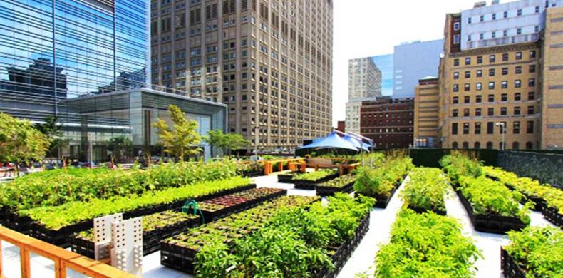

Agricultura Urbana
- Técnicas
- Benefícios
A agricultura urbana refere-se à prática de cultivar alimentos e plantas em áreas urbanas, como quintais, telhados, varandas, terrenos baldios e até mesmo em pequenos espaços dentro das cidades. Essa prática tem se tornado cada vez mais popular devido aos benefícios que proporciona tanto para o meio ambiente quanto para a comunidade local.
A prática da agricultura urbana traz diversos benefícios para as comunidades locais:
Acesso a alimentos frescos: A produção local de alimentos proporciona acesso a produtos frescos e saudáveis, reduzindo a dependência de alimentos que precisam ser transportados de longas distâncias.
Telhados Verdes: Jardins ou pequenas fazendas instalados nos telhados de edifícios urbanos. Um grande exemplo é a Brooklyn Grange em Nova York, um dos maiores telhados verdes do mundo que produz toneladas de vegetais anualmente.
Mercados de Agricultores Urbanos: Locais onde agricultores vendem diretamente aos consumidores em grandes cidades, como o Union Square Greenmarket em Nova York, oferecendo produtos cultivados localmente.
Cultivo em Pequenos Espaços: Uso criativo de áreas pequenas como varandas, janelas e quintais para cultivo de alimentos. Projetos como o "Windowfarms" incentivam o cultivo vertical de ervas e vegetais em apartamentos.

.png)
.png)